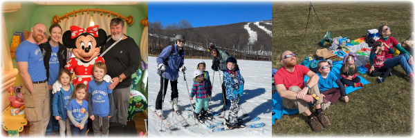

<link rel="stylesheet" href="css/article.css">
<style>
.signoff {
  margin: 15px 0 0 80px;
  margin-left: 80px;
}
.signoff p {
  margin: 0;
}
.signoff p.names {
  margin: 0 0 0 20px;
}
.benediction {
  font-weight: bold;
  text-align: center;
}
</style>
<title>Christmas Greetings 2024</title>
<main>
<div class="pad"></div>
<nav>{% include nav.html %}</nav>
<article>
<h1>Christmas Greetings 2024</h1>

<p>This year Team Hicks travelled <em>a lot</em>, with 11
overnight, out-of-state trips for the children and even more for the
grown-ups!  Some of the highlights:</p>

<ul>
<li>Steve and the children's first trip to Disneyland (with
Great-Uncle Matt),
<li>a final visit with Great-Grandpa Jerry,
<li>skiing in PA (Emily's and Una's first ski trip),
<li>driving to upstate NY to view the Total Solar Eclipse,
<li>visits to TN, FL, and CA for family and homeschool conferences
<li>a family reunion in northern CA, plus lots of visits with Bay
  Area friends,
<li>history and science field trips to Philadelphia,
<li>Steve's work trip to JSConf in Guadalajara, Mexico,
<li>Brie and the children's trip to KS for a family memorial and
  lovely visits,
<li>Brie's trip to Shenandoah with friends of 30+ years,
<li>and our first international trip (England and France) as a family!
</ul>

<figure>

</figure>

<p>We spent two weeks touring London, Normandy, and Paris.  This was
an amazing, formative experience for the whole family (on which Brie
has written pages and pages, but we'll spare you the details here).
We toured Buckingham Palace and Mews, attended Sunday worship at
Westminster Abbey, viewed the city from atop the London Eye, explored
the British Museum (twice!), took in numerous D-Day memorials and
museums, climbed to the tops of Mont Saint-Michel and Sacré-Cœur (and
half-way up the Eiffel Tower), biked along the Seine, cheered on Team
USA in women's wheelchair basketball, and so much more!</p>

<figure>

</figure>

<p>One final anecdote from the trip: our arrival into Paris was
multiple hours later than we'd planned, and the adults were pretty
stressed out about whether our timed-entry tickets for the Louvre
would still be valid.  As we were juggling luggage while debarking the
train to begin a rainy walk to our hotel, Emily seemed eager to get
Brie's attention.  She finally commanded emphatically "Mom! Look!"
Brie looked up to see what Emily was so excited about: the Eiffel
Tower rose straight ahead of us in the distance.  Emily was aglow with
delight in recognizing the landmark and seeing it in person for the
first time. Those are the moments that make all the effort worthwhile.
In the busy-ness of the holiday season (and life in general), don't
forget to enjoy the wonder all around you!</p>

<figure>

</figure>

<p>We continue to keep busy with a lot of our usual activities along
with some new ones this year (taekwondo and Trail Life for Chris
and Steve, dance for Una and Emily, handbell choir for Brie and
Chris).  We celebrated our family's collective "100th birthday" and
won a costume contest with our Bluey-themed family costumes. Steve
still works remotely for Google.</p>

<p>We wish you blessings in the year to come and may the Peace of
Christ and wonder of His Love fill you this holiday season and always!
And please do come by our way for a visit sometime.</p>

<div class="signoff">
<p>Love,</p>
<p class="names">Team Hicks
<br>Steve, Brie, Chris, Una, and Emily</p>
</div>

<p class="benediction">In gratitude for the blessings of the past year
and the adventures yet before us</p>

<figure>

<figcaption></figcaption>
</figure>

</article>
<div class="pad"></div>
</main>


